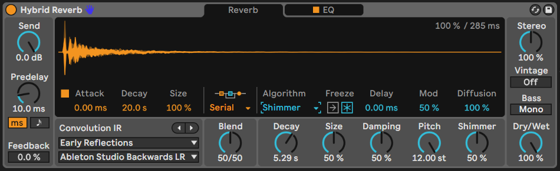
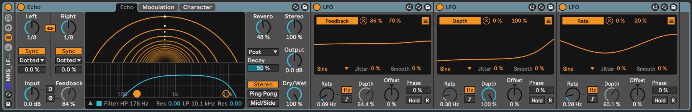
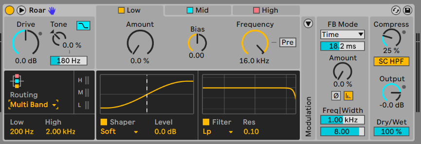
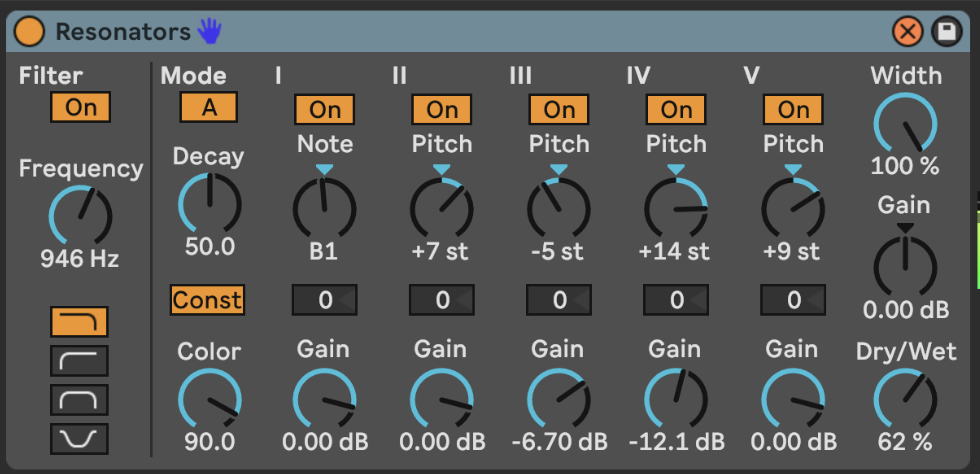

16 Tools - Creative use of audio effects
It is possible to create generative tracks that do not use reverb and delay. But to be honest, it isn’t done often. In the preface to this book I said about ambient music: “Take any sound, drown it in reverb and delay… JOB DONE”. You can, and I’d argue you should do better than that. Creative use of audio effects can accentuate harmonics and do interesting things with those; provide some grit, noise or warble; take a rather plain sound and use modulation and effects to twist it until it forms something much more interesting and evolving. All this BEFORE drowning it in reverb and delay.
Key idea
Audio effects and automation together can take sounds and keep them interesting and evolving in ways that go beyond “static” application of reverb and delay on Return channels. Think of how you can use the huge range of creative effects provided by Ableton and employ these in ways that will take your original sound in completely new directions. This will provide the listener with some additional “ear candy” to keep the sounds interesting.
16.1 The tools of the trade
Ableton Live Suite comes with a HUGE range of audio effects and if you add in Max for Live effects there are almost too many audio-manglers out there to list or talk about in this chapter. While there are a few third-party audio effect plugins that are worth a mention, and which I use a LOT in my productions, you can get a LONG way with just the stock Ableton Live Suite audio effects. The benefit of third party plugins is where they offer something that the Live effects cannot. I’ll talk about some of these below. But let’s start looking at a few key plugins which are likely to be useful for generative music (and in particular for generative, ambient music which I create).
16.2 Hybrid Reverb
The Hybrid Reverb in Live Suite is a really nice reverb. It has a Convolution Impulse Response (IR) section which allows you to dial up real-world reverb from a wide variety of spaces and an Algorithm section which applies reverb processing and colouration. You can blend between these or apply them in parallel and series. This in itself offers up a huge variety of sounds. This video will help explore what can be done with the Hybrid Reverb effect https://www.youtube.com/watch?v=yLBIOiM97Vs.
But when you dig into the Convolution IR section you’ll also find options for textural processing - this applies a textural Impulse Response (IR) to the sound, so instead of a straight reverb tail, you’ll get some additional texture from the IR audio file. The other thing to point out is that there is an option to have User-defined IR. This means that you can find IR audio files for different spaces online at sites like Open Air https://www.openair.hosted.york.ac.uk and use some additional IR files for some famous spaces, like Hamilton Mausoleum and York Minster. Obviously finding the right reverb sound for ambient music is kind of a key item. But you don’t have to use just one. I like to use a long, lush reverb to help smear sound and create drones. I usually put this on a FX Return channel so I can route several tracks to it and save CPU. But you may also need a shorter reverb for other instruments to give them presence, in the way that a close mic to an instrument in one of these huge reverb spaces will capture more of the raw sound, while the gigantic reverb captures the instrument in the space itself.

16.3 Valhalla Supermassive
Here’s a third-party effect I couldn’t do without. Valhalla Supermassive is a free audio effect plugin from Valhalla DSP. It’s a staple of ambient and drone producers because a) it’s free and b) it has some MASSIVE reverb algorithms (duh!). Suffice to say it does exactly what it says on the tin - massive reverbs. But what Valhalla have done rather well is to combine algorithms and delay lines so that some of its algorithms behave more like delays, while some act more like reverbs. They also have algorithms that combine both - early delay turning into massive reverb. Some have short attack, some much longer. One of my personal favourites is the “Benson Arizona” preset which will turn ANYTHING into a massive drone. Combine this with Paul Stretch, as discussed in @ref(tools-paul-stretch) and you’ll have instant drones.
To be honest, all of Valhalla DSP’s plugins are excellent and reasonably priced. I particularly like the Shimmer device to add shimmer and pitch shift reverb to sounds. Their Delay plugin provides a wide variety of delay types, including tape delay (complete with wobble and drive) but also usefully a reverse delay (where the original audio is played backwards in the delay). I like the latter as the delayed line comes back transformed compared to the input. Again this adds some interest to the part.

16.4 Echo
I tend to prefer Live Suite’s Echo effect rather than delay. There is a wide range of sounds possible using it, and some built in modulations and tweaks to the sound which add character. Use of Echo as a send effect has a long legacy in dub music where the DJ or producer would send a burst of signal to the Echo and by tweaking the feedback and EQ would create long tails of echo. You can learn more about the Echo effect here: https://www.youtube.com/watch?v=4LxhIE169x4.
Being a Lazy Producer, I prefer to let random processes tweak the Echo settings. I have built an audio effect rack with a trio of LFOs working on each other and then changing the feedback amount, lower and upper ranges of the EQ so that these wobble about randomly. Using an instance of Dillon Bastan’s Strange Mod modulator will achieve similar effect as discussed in 8 While the timing of the Echo is fixed, we have other parameters that mean that the sound is constantly shifting in an unpredictable way. This will prevent the Echo effect from being too “samey” across the track and provide some interesting moments. It’s a bit like having a pair of “robot hands” that tweak the Echo settings.

16.5 Saturation and Distortion
Saturation may seem like a weird choice for ambient music where much of the music produced is “pristine” and “delicate”. But there is a whole sub-genre where gritty, distorted sounds are most definitely a thing. My favourite from Live Suite is the Saturator plugin which provides a wide range of subtle distortion and drive. If you need more distortion than saturation then the Pedal plugin provides raw Overdrive, Distortion and Fuzz, Saturator allows you to drive the signal and dial in more subtle drive and overtones.

Live 12’s Roar device takes these to the next level though and provides a comprehensive set of tools for applying anything from subtle warmth to the inputs to full-blown distortion. It has a wide range of routing options, including multi-band which allows you to dial in distortion for different frequency bands. This is a device that is really worth exploring to add texture in a wide variety of ways.

More about Roar here: https://www.youtube.com/watch?v=ETzf6O9-6us
16.6 Resonators
The Resonator effect takes an incoming signal and then resonates it by pitch-shifting additional resonators. You can dial-in the amount that the resonant frequencies are heard via gain adjustment, you can define the pitch of the resonator and whether the resonator is centred on a particular pitch. This can be useful to create drone noises and coupled with a long reverb like the Valhalla Supermassive you can create some really lush ambient beds.
I have found that a little drive to the input signal (which boosts upper resonant frequencies of the audio) works will with resonator to make the result more pronounced.

More about the Resonator effect here: https://www.youtube.com/watch?v=wSjp6nX3rYI
16.7 Spectral processing
Ableton Live Suite includes three Spectral audio effects. Spectral processing is interesting because instead of applying effects in a time-based manner (as audio comes through the effect) it is applying effects according to frequency (low to high) and loudness.
16.7.1 Ableton Spectral effects
Spectral Time which can be either apply a freezing algorithm to catch and hold incoming audio, or delay which applies delay and frequency shifting. The Tilt, Spray and Mask parameters apply the delayed audio to different parts of the frequency spectrum and gives some interesting smeared, granular and glitchy sounds. The Freezer and Delay algorithms can be used separately or chained serially from one into the other. Setting long fade in and fade out times allows you to catch and smear incoming audio which may be useful as part of a performance to join between two tracks or two sections of a mix.
Spectral Resonator is a resonator which focuses on different parts of the frequency spectrum, so you can tailor the resonance quite precisely. You can have a static tone for the resonance or pass in a MIDI part to change the resonance around a MIDI part. The different resonance algorithms - Chorus, Wander and Granular all have different sounds and it’s worth playing with these to see which ones fit what you’re trying to achieve.

Rishabh Rajan has useful YouTube videos explaining the Spectral Time (https://www.youtube.com/watch?v=KUZLXAK8do4) and Spectral Resonator (https://www.youtube.com/watch?v=VAebi_brjEs) effects.
16.7.2 Michael Norris Soundmagic Spectral collection
Michael Norris has created some fantastic spectral plugins which can be downloaded here: https://www.michaelnorris.info/software/soundmagic-spectral as donation-ware.
The Spectral Averaging and Spectral Blurring are my two favourites from this collection to smear and blur incoming audio and create lush drones with the same sonic “fingerprint” as the original, but as a long drone texture. Applying these to the an audio clip or to a PaulStretch stretched audio will apply even more smearing and blurring to create fantastic drone textures.
The key parameter in both of these plugins is the FFT size which determines the size of the sample window in which the blurring or averaging is taking place. Larger FFT sizes smear more, but take longer to fade in and out since the processing is happening over a larger window of audio. You may also find that you need to increase the gain of the output.


The whole collection is worth checking out for some very interesting effects, although as you can see above the user interface is VERY bare-bones.
16.8 Other notable mentions
16.8.1 Shifter
Shifter is a combination of a pitch and frequency shifter and ring modulator. It’s a bit of a beast because it can be either subtle and also extremely weird depending on how much shifting you do (and what type). This video provides a nice overview of the different modes and features: https://www.youtube.com/watch?v=uqY8K8otbp0

16.8.2 Corpus
Corpus is the audio effect companion to the Collision instrument. The input audio is used to excite a resonator - a plate, tube, membrane etc. - which then resonates. Depending on the resonator you choose you get different artefacts and results.

16.9 FX in series vs Effects Rack vs Return channels vs Separate tracks
There are so many routing options in Ableton Live that give us a HUGE range of possibilities when it comes to routing audio through effects. The effects can be on the track itself either in series (each effect passes its output on to the next effect) or in parallel using Effects Racks, on a separate track that brings audio from another track into it - with Monitor set to “In” and input selecting from another audio track or group bus - or in a Return channel where one or more tracks are routed into the Return send for processing. So which to choose?
I don’t mind. It’s YOUR track. But here are some thoughts on how I would use each option.
I would use effects in series where I want the effects to build on each other. This is helpful if you’re going to use an effect to add some colour which can be exploited in the next effect, for example adding some grit that will ping a resonator, or a compressor to reduce the highs and bring up quieter moments which can then be fed into a saturator.
Effects in an Effects Rack are typically in parallel, although it’s of course possible to build chains of effects within each chain or layer of the Effects Rack. I typically use these and then apply some modulation that will fade in and out each chain or select between them so that over time the different effects are not static over time.
Return channels are really useful if you’d like to send more than one track to an effect (reverb or delay) where you’d like to keep the effect consistent for each track or where you want to “mix” various tracks through an effect.
Using the output of one track as the input for another and then applying effects is a little like using a Return channel only the return channel is an ordinary Live track. This can be useful if you want to keep the “raw” track in the mix and apply effects separately, but it also allows you to pass the result of that track on into another track. So at any stage you can split out the audio, apply effects, route any of that signal to Return channels, then ingest the effected track into a further track for yet more processing.
So the choice is yours. Really. Try them all out. See which one works for you in a given situation. I don’t mean that you should pick one and stick with it, but rather that you have a range of possible avenues to explore even within one track.
16.10 Use an Envelope with your effect
If your sound has a sharp attack, you may want to soften the send to the FX so that only the tail of the sound gets effected. Use an Envelope Follower effect before the audio effect. By setting the Map to 100% lowest and 0% highest (inverting the signal) it will duck the initial part of the sound (turning the send DOWN) and then bring it back up as the audio decays. Not that in the device below I have turned up gain to accentuate the behaviour (basically to make the peak duck enough that the initial part of the audio has a low enough send amount) and I have smoothed out the Rise and Fall amounts which removes any “pumping” of the send to the Return channel effect. By setting a Delay you can also manually dial in how much or little of that initial part of the sound gets sent to the Return channel. This technique can be useful to capture and build drone sounds where you want to avoid sudden changes volume.